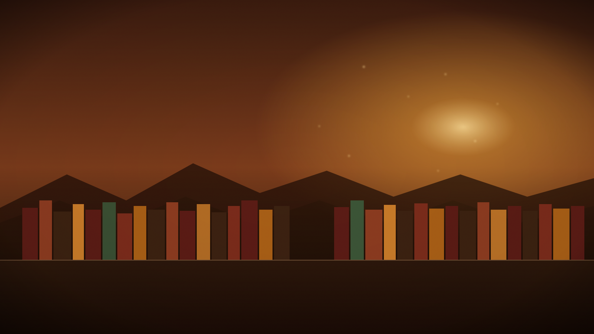
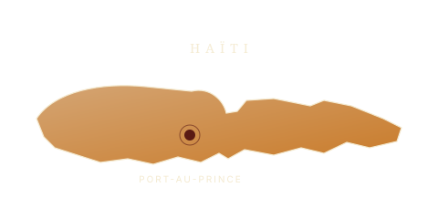

Recueil — Tome I
Tracts d'un pur laine nègre
Plus de 150 textes courts, engagés, sur la condition noire, la mémoire, la transmission.

Prélude
Après la réédition de plus de 300 textes réunis en deux tomes des Tracts d'un pur laine nègre, publiés aux Éditions Publibook, LPJ revient avec 21 histoires.
Un univers différent, mais toujours la même plume engagée et le même objectif : amasser des fonds pour ouvrir des bibliothèques dans les quartiers défavorisés, en commençant par Haïti.
Un projet visant à offrir l'accès à la lecture, à la culture et à l'éducation — un livre à la fois, un quartier après l'autre.
Trois ouvrages, une même voix. Chaque livre vendu participe directement au financement des bibliothèques.
Recueil — Tome I
Plus de 150 textes courts, engagés, sur la condition noire, la mémoire, la transmission.
Recueil — Tome II
Suite du premier tome — la plume s'élargit. La langue, l'histoire, l'identité.
Nouveau — Nouvelles
Un univers différent. La même cause. Vingt-et-un récits pour porter le projet.

La mission
Ouvrir, équiper et faire vivre des bibliothèques dans les quartiers défavorisés. Commencer par Haïti — Port-au-Prince et au-delà — parce que c'est là que tout a commencé, et là que tout doit recommencer.
Trois piliers
Un même geste : remettre dans les mains des enfants — et des adultes — les outils dont ils ont été privés. Des livres. Des ordinateurs. De la musique. Un endroit où s'asseoir et apprendre.
La méthode
Les ventes de 21 histoires et des deux tomes des Tracts alimentent directement le fonds de construction et d'équipement. Chaque don complète, accélère, prolonge.
Comment aider
Acheter, donner, transmettre. Toute contribution — même la plus discrète — entre dans la même mission : ouvrir une porte de plus vers la lecture.
01
Les deux tomes des Tracts chez Publibook et bientôt 21 histoires. La première façon d'aider.
02
Romans, jeunesse, manuels, dictionnaires — toute lecture qui peut prendre place sur une étagère.
03
Pour la lecture numérique et la recherche.
04
Pour copier, partager, transmettre.
05
Cahiers, stylos, sacs — l'essentiel.
06
La culture ne s'arrête pas aux pages. Tout instrument, en état, trouve sa place.
07
Étagères, tables, chaises — l'infrastructure d'un lieu où l'on peut s'asseoir et lire.
Faire un don
Don par virement Interac vers la Banque TD. Indiquez la mention « Don » dans la transaction pour qu'il soit alloué directement au projet bibliothèques.
Mèsi anpil
Chaque livre acheté, chaque carton donné, chaque virement reçu — c'est un rayon de plus, une chaise de plus, une lampe de plus dans un endroit où il n'y en avait pas.
— Junior Lefèvre Pierre